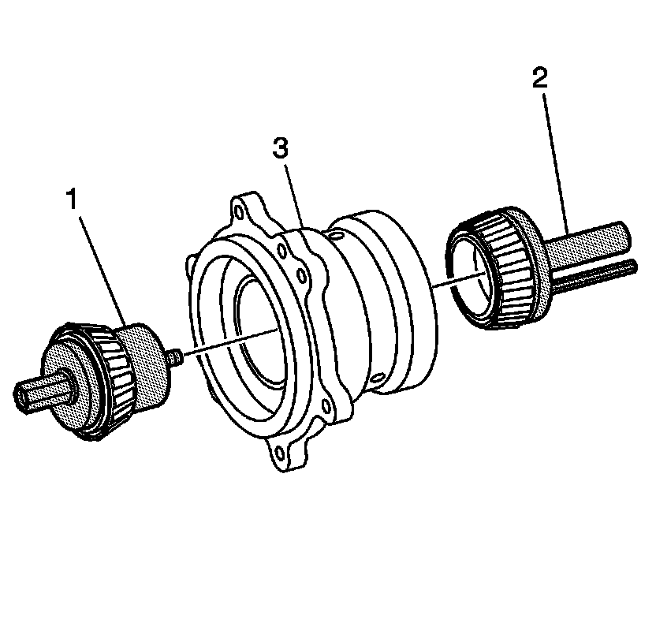
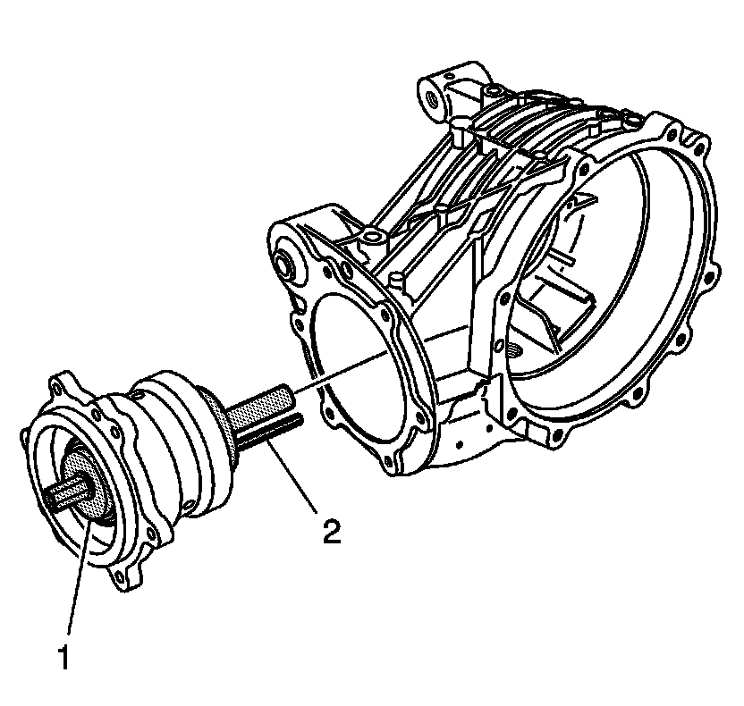
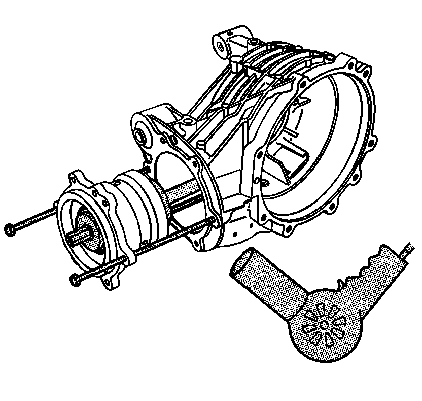
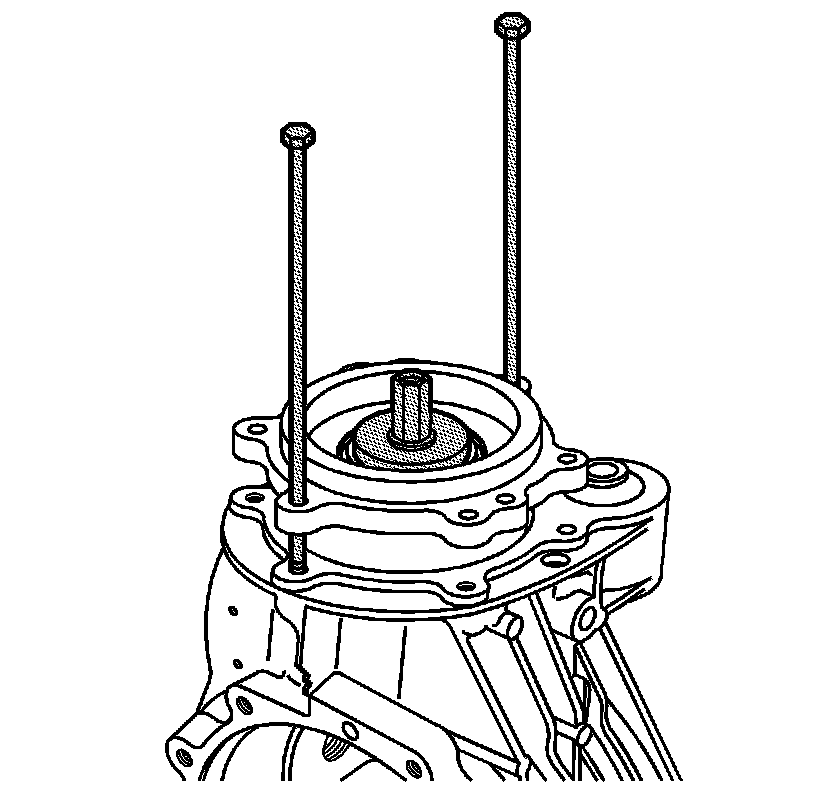
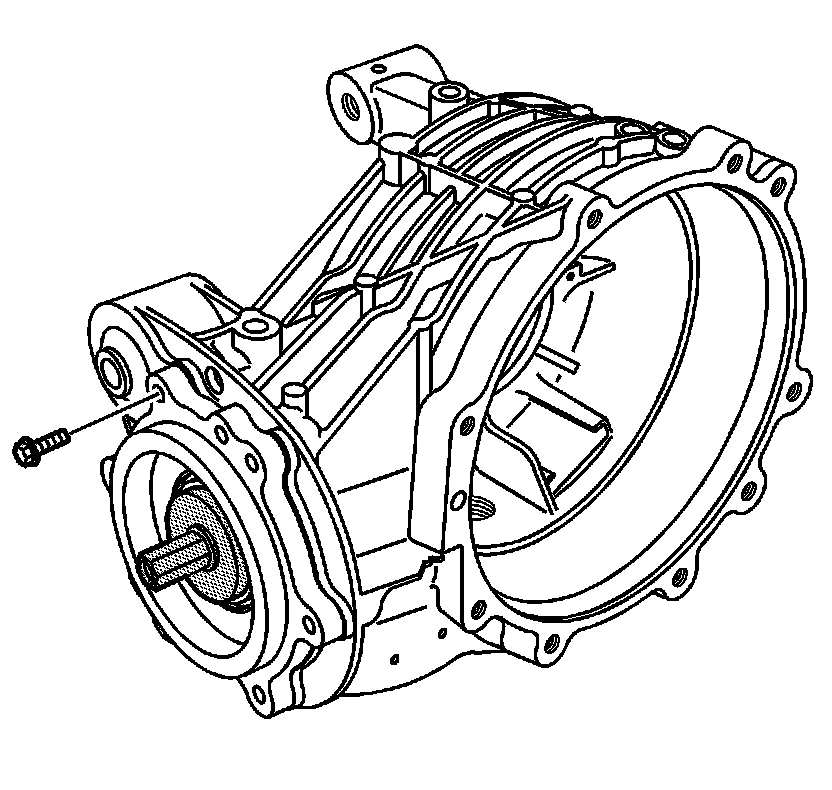
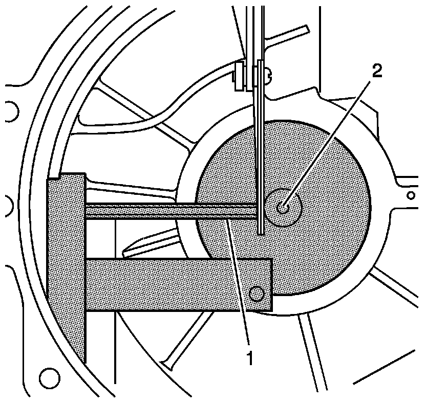

Pinion Depth Adjustment
Pinion Depth Adjustment
Tools Required
* J 25070 Heat Gun
* J 42168-9 Holding Strap
* J 45013-2 Gage Assembly
* J 45013-3 Gage Cylinder
* J 45013-5 Gage Centering Assembly
* J 45013-7 Adapter Screw
* J 45019 Flange and Pinion Cage Remover

1. Install pinion tail bearing then the pinion bearing spacer on the J 45013-5 (1).
2. Install the head bearing on J 45013-2 (2).
3. Install them into the pinion bearing cage (3) as shown.
4. Snug the J 45013-7 . This will apply the proper bearing preload determined by the custom ground spacer that is provided with the bearing kit.

5. Install the J 45013-3 (1) into the differential carrier as shown.
6. Turn the carrier over and attach the holding strap J 42168-9 and thumb screw (2). Snug the thumb screw.

Important: When installing the pinion bearing housing into the carrier, ensure that the gage rod (2) does not hit the ribbing inside the carrier.
7. Inspect the pinion cage surfaces. Ensure that there are no nicks or burrs on the pinion cage surfaces or in the carrier bore.

8. Using 2 long bolts from J 45019 as guides, align the bolt holes of the pinion cage and the carrier. Snug the bolts.
9. Apply a light coat of gear lube to the carrier bore and pinion cage in order to ease assembly.
10. Heat the carrier using J 25070 in order to ease pinion cage assembly.

11. While aligning the guide bolts and bolt holes, push the pinion cage into the bore of the carrier.

12. Install the pinion cage bolts and tighten in a criss-cross pattern.
Notice: Refer to Fastener Notice (Fastener Notice) .
Tighten the pinion cage bolts to 29 N.m (21 lb ft).

13. Measure the distance between the hex rod on the J 45013-2 (1) and the post on the J 45013-3 (2). Record this measurement.
14. Subtract this measurement from 5 mm (0.196 in). This is the amount of pinion shim size value B2.
15. Remove J 45013-3 from the carrier.